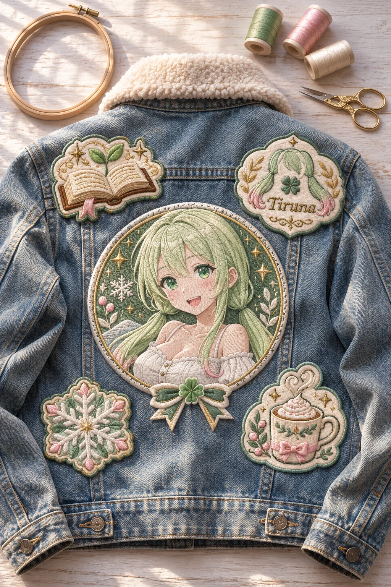
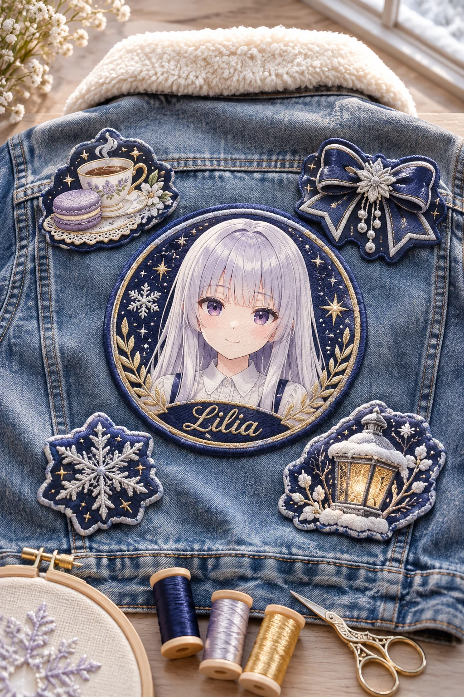
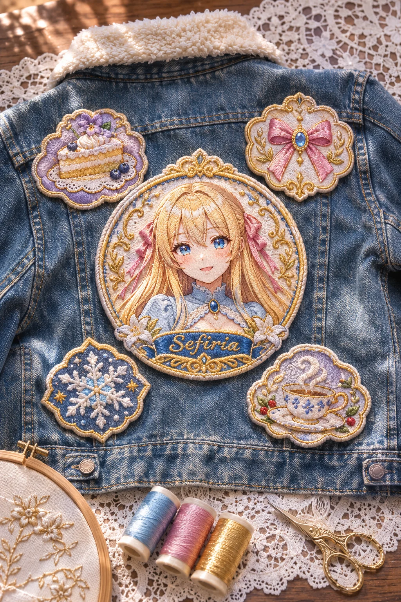

うちの子の刺しゅうワッペンを作るプロンプト
ひみつの眠り姫のプロンプト配布
GPT-image-2 用2026-11-15
ChatGPT（GPT-image-2）に自分のキャラの絵を1枚渡して、この文を貼るだけ。うちの子をもとにした、ふっくら盛り上がった刺しゅうのワッペン5枚を、冬のデニムジャケットの背中に縫いつけて、真上から写した一枚になります。背中のまんなかには、にっこり笑ううちの子の顔のワッペン。まわりには、その子の好きな物、ひと目でその子とわかるシンボルマーク、似合う冬の小物2つのワッペンが並び、そばに刺しゅう枠と糸巻きが置かれます。どの図案にするかは、AIがキャラを読み取って毎回ちがうものを選んでくれる、図案のガチャです。名前のほかは空欄でもOK。糸の色や、顔のワッペンの服、ジャケットを置く場所、図案の雰囲気を決めたいときは、その欄に書くだけです。
作例



※作例の画像の転載・保存しての再配布はご遠慮ください。
3人のおしゃべり（うちの子の刺しゅうワッペン）

リリア
……それでは、ワッペンの鑑賞会をひらきます。まずはティルナちゃんのジャケットから、一枚ずつ見ていきますね
ティルナ
見て見て！ 背中のまんなかの丸いのが、笑ってるわたし！ 糸がふっくらしてて、ほっぺのピンクまで刺しゅうなの！

セフィリア
ほんとうに、ふかふかなのです。デニムの背中に5枚、ボアのえりの下に並んでいるのです
リリア
右上は、ツインテールと四つ葉のマークに『Tiruna』のお名前。左下は雪の結晶、右下はクリームののったココアです
ティルナ
えへへ、ココアは毎日飲みたいもん！ 雪の結晶も、ピンクと若草色ですっごくかわいいでしょ！
セフィリア
では左上の、芽の出た本は……ティルナ、本が好きだったのです？
リリア
……図書館で、絵本をひらいたまま、こくりこくりしていたのを見ました。たぶん、それです
ティルナ
わーっ、それ言っちゃだめなやつ！ 起きてたもん、目をとじて読んでただけだもん！
セフィリア
今日の配布は、添付した画像の子をもとに、刺しゅうのワッペン5枚を作る GPT 用プロンプトなのです
ティルナ
まんなかは顔で、あとは好きな物とマークと冬の小物2つ！ どの図案になるかはAIが選ぶから、毎回ちがうガチャなの！
リリア
糸の色の欄に書くと、ふちどりの糸の色が変わります。背景の欄なら、ジャケットを置く場所です
セフィリア
文字はお名前ひとつだけ。ほかの字や数字は入らないように書いてあるのです
ティルナ
次はリリアの！ 糸を紺と銀にしたら、紅茶とマカロンに、リボンと雪の結晶と、雪の積もったランタンだって！
リリア
……紅茶とマカロンは、夜ふかしの読書のおともだと、ばれてしまいました。少し、糸巻きの陰にかくれていますね
セフィリア
わたくしは背景に、白いレースのテーブルクロスと書いたのです。ふちが金色になって、ケーキと紅茶とリボンが並んだのです
ティルナ
三人ともちがう図案なのに、並べるとおそろいみたい！ ねえ、冬のお出かけに三人で着ていこうよ！
リリア
……はい。ばらしたおわびに、わたしも着ていきます。あなたの子のワッペンも、何が出たか見せてくださいね
使い方（3ステップ）
- ChatGPT を開いて、画像を作れるモード（GPT-image-2）にする
- 自分のキャラの絵を1枚だけ添付する（自分の絵・使ってよい画像だけ。いつもの絵のままでOK。下の「おまけ」で元絵を作った人は元絵を）
- 下のプロンプトをワンタップでコピーして、いちばん上の「▼ ここに書く」の欄（色の付いたところ）にキャラの名前などを書いて送信する（名前のほかは空欄でもOK。服・背景・ポーズを変えたいときは、その欄に書くだけ）
プロンプト
書くのは「▼ ここに書く」の欄だけ
- 色の付いたところ（「：」のうしろ）に書くだけ。【 】は消さずにそのまま残してね
- 下の文章に出てくる【キャラの名前】などは書き換えなくてOK（AIが上の欄を読んでくれます）
- 任意の欄は空のままでも大丈夫（おまかせになります）
- 👗 服・アクセサリー／背景／ポーズを変えたいときは、その欄に書くだけ。欄に書いた内容が下の文章より優先されるように作ってあるので、下の文章は書き換えなくてOK。空欄なら、服とアクセサリーは添付した絵のまま、背景とポーズは下の文章のとおりになります。顔立ち・髪型・髪色・目の色は、いつも添付した絵のままです
- 💡 添付した絵と違う服にしたいときは、色と形まで具体的に書くと混ざりにくくなります（例：「白いニット」より「白いケーブル編みのニットと紺のプリーツスカート」）
- 🚫 添付する絵は自分のキャラ・自分が権利を持つ画像だけ。版権キャラ・他の人のキャラの画像は固く禁止です（下の「配布ルール」）
プロンプト
添付した画像のキャラクターをもとに作った、オリジナルの刺しゅうワッペン5枚を、冬のデニムジャケットの背中に縫いつけて、真上から写した写真を作ってください。 5枚のワッペンにどんな図案を選ぶかは、キャラの見た目や性格や好きな物からあなたが考えて作ってください（毎回ちがう結果になってOK）。 ▼ ここに書く（「：」のうしろに書くだけ。【 】は消さずにそのまま。名前だけは必ず書く。ほかの空の欄はおまかせ） 服・アクセサリー・背景・ポーズを変えたいときは、その欄に書くだけ（下の文章は書き換えなくてOK） 【キャラの名前】： 【糸の色】： 【服・アクセサリー】： 【背景】： 【ポーズ・追加の指示】： ▲ ここまで（下の文章に出てくる【 】は、上の欄に書いた内容のこと。下は書き換えない） ■ 上の欄の使い方（ここは変えない） ・【糸の色】が書いてあれば、5枚のワッペンのふちどりと、図案の中心の色をその色の糸にする。空欄なら、キャラの髪と目の色から選んだ糸に、金糸を少し ・【服・アクセサリー】が書いてあれば、顔のワッペンの中のキャラが着る服をそれにする。顔立ち・髪型・髪色・目の色・髪飾りは添付画像のまま。空欄なら、添付画像の服の襟もとをそのまま ・【背景】が書いてあれば、ジャケットを広げて置いた場所をそこにする。空欄なら、窓からの冬の朝の光が差す、白木の作業台の上 ・【ポーズ・追加の指示】が書いてあれば、顔のワッペンの表情や、5枚の図案の雰囲気をそちらにする。空欄なら下の文章のとおり ■ 写真の作り ・【背景】に、背中を上にして広げた冬のデニムジャケット（えりにボアのついた、色落ちしたブルー）を1着、真上から写す。ジャケットの肩から背中いっぱいに、ふっくら盛り上がった刺しゅうのワッペンを5枚、すこしずつ角度を変えてバランスよく縫いつける ・ワッペン1枚目（いちばん大きく、背中のまんなか）＝丸い形で、【キャラの名前】の胸から上の顔。こちらを見てにっこり笑う。顔立ち・髪型・髪色・目の色・髪飾りは添付画像のキャラだと刺しゅうでも一目でわかるように ・ワッペン2枚目＝キャラの好きな物（食べ物・小物・動物など）をAIが考えた図案 ・ワッペン3枚目＝ひと目でその子とわかるシンボルマーク（髪飾りや持ち物の形をもとにしたマーク）をAIが考えた図案 ・ワッペン4枚目と5枚目＝冬の小物（雪の結晶、ミトン、湯気の立つマグカップ、ニット帽、ヒイラギなど）から、その子に似合う2つをAIが選んだ図案 ・どのワッペンも、ふちはメロー糸でぐるりとかがり、糸の一本一本の向きと、つやのある金糸のきらめきが見えるように ・ジャケットのそばに、木の刺しゅう枠1つと、色とりどりの糸巻き3つ、小さな金色の糸切りばさみを置く ・文字は、ワッペンのどれか1枚に小さな欧文の【キャラの名前】のローマ字を刺しゅうで1回だけ。ほかの文字・数字・ロゴは一切入れない ・ほかのキャラや人は描かない。写真の中に人の手や指は写さない。鏡や鏡のような小物は置かない ・名前の書き方＝欧文の文字は【キャラの名前】のローマ字（【キャラの名前】がカタカナだけなら、その読みをローマ字にして書く） ・実在のブランド、お店、キャラクターの名前やロゴは書かない ■ 仕上がりの質（ここは変えない） ・刺しゅう糸のふっくらした立体感と影、サテンステッチのつやの向き、デニムの綾織りの目と色落ち、えりのボアの毛足、白木の木目まで細かく描く ・顔のワッペンのキャラは、刺しゅうでも、細い線の目もとと何色も重ねた瞳の糸、頬の血色のピンクの糸、髪の毛束の流れまで繊細に ・冬の朝のやわらかな光と、手前と奥のボケと光の粒で、思わず自分の服にも付けたくなる空気感を出す ・上品で透明感のある配色。ハイエンドな写真の最高品質、超高精細 ・縦長 2:3
書くところ
| 欄 | 説明 | 例 |
|---|---|---|
| 【キャラの名前】 | 必須。顔のワッペンのキャラと、ワッペンに刺しゅうするローマ字の名前になります | ティルナ（Tiruna）／リリア／Sefiria |
| 【糸の色】 | 任意。5枚のワッペンのふちどりと、図案の中心の糸の色になります。空欄なら、キャラの髪と目の色から選んだ糸に、金糸を少しです | （空欄）／夜空のような深い紺色と、銀色 |
| 【服・アクセサリー】 | 任意。顔のワッペンの中でキャラが着る服になります（顔立ち・髪型・髪色・目の色は添付のまま）。空欄なら、添付した絵の服の襟もとのままです | （空欄）／白いファーのついた赤いケープ |
| 【背景】 | 任意。ジャケットを広げて置いた場所。空欄なら、冬の朝の光が差す白木の作業台の上です | （空欄）／白いレースのテーブルクロスをかけた、アンティークの木のテーブルの上 |
| 【ポーズ・追加の指示】 | 任意。顔のワッペンの表情や、5枚の図案の雰囲気を書けます | （空欄）／図案は、元気で楽しい物に |
（おまけ）元絵を綺麗にしておくと、もっと綺麗に
元絵は作っても作らなくても大丈夫です。いつものキャラの絵をそのまま添付しても、上のプロンプトで綺麗に仕上がります。もっと綺麗に・毎回ブレずに作りたい人は、先にこの手順でこのプロンプトに合わせた「元絵」を作っておくのがおすすめです。書き換えるところはないので、そのままコピーして使えます。
- ChatGPT を開き、新しいチャットで画像を作れる状態（GPT-image-2）にする
- 自分のキャラの絵を1枚だけ添付する（全身が写っている、いちばん「その子らしい」絵がおすすめ。ラフや小さい絵でも大丈夫）
- 下の「元絵を作るプロンプト」をそのままコピーして貼り、送信する（書き換えるところはありません）
- できた絵を保存する。これがあなたのキャラの、このプロンプト用の「元絵」です
- 新しいチャットを開き、保存した元絵を添付して、このページの上の「プロンプト」を貼って送信する
元絵を作るプロンプト（そのままコピーして送るだけ）
添付した画像のキャラクターを、「うちの子の刺しゅうワッペン」プロンプトで使う元絵として、同じキャラのまま最高品質の繊細なアニメイラストで描き直してください。 ■ キャラ（ここは添付画像のまま） ・顔立ち、髪型、髪の長さ、髪色、目の色、髪飾り、服のデザインと色、アクセサリーは添付画像のまま変えない ・添付画像で見えない部分は、見えている部分から自然につなげて描く ■ 構図（顔のワッペンの図案のもとになる、こちらを見てにっこり笑う胸から上） ・胸から上。正面を向いて、顔はこちらを見てにっこり笑う。目を開けて瞳の色がよく見えるように ・手は写さない（腕は体の横に下ろして、フレームの外） ・髪型と髪色、髪飾り、服の襟もとの形と色がはっきり見えるように。顔の輪郭と髪のシルエットがくっきりわかるように ・背景は白から淡い水色へのやわらかいグラデーションだけ。小物や文字は入れない ■ 仕上がりの質 ・線は細く繊細に。髪は一本一本の毛束と、光が透けるやわらかさまで描き込む ・瞳は宝石のように何層もの色とハイライトを重ねて、きらきらと輝かせる ・肌はやわらかな陰影と、頬にほんのり血色 ・服のレースやフリル、刺繍、アクセサリーの宝石と金具まで細かく描く ・やわらかな光で輪郭をきれいに。上品で透明感のある配色、ハイエンドなアニメイラストの最高品質、超高精細 ・縦長 2:3
うまくいかない時
- 元絵は、顔のワッペンの図案の元になるように、胸から上で正面を向いてにっこり笑う姿・手は写さない・背景は白から淡い水色だけにしてあります。ジャケットやワッペン、文字は、本体のプロンプトの方でつきます。
メモ
- 5枚のワッペンの図案（好きな物・シンボルマーク・冬の小物）は、毎回AIがキャラに合わせて選びます。
- 文字はワッペンのどれか1枚のローマ字の名前だけで、ほかの文字・数字・ロゴは入らないように書いてあります。写真の中に人の手は写らないように書いてあります。
- ティルナの作例は名前と、図案に「元気で楽しい物に」だけ。糸の色は空欄なので、AI が若草色とピンクに金糸を選び、まんなかの笑顔のワッペンのまわりに、芽の出た本・ツインテールと四つ葉のマークに名前・雪の結晶・クリームののったココアが並びました。
- リリアの作例は、糸の色に「夜空のような深い紺色と、銀色」と、図案に「静かな冬の夜に似合う物に」。書いたとおりの紺と銀の糸で、まんなかの微笑むリリアのまわりに、紅茶とマカロン・銀の飾りのついたリボン・雪の結晶・雪の積もったランタンが並びました。名前はまんなかのワッペンの下に入っています。
- セフィリアの作例は、背景に「白いレースのテーブルクロスをかけた、アンティークの木のテーブルの上」と、図案に「気品のある上品な物に」。書いたとおりのレースのテーブルクロスの上で、ワッペンは金のふちどりになり、すみれとブルーベリーのケーキ・青い宝石のついたピンクのリボン・雪の結晶・湯気の立つティーカップが並びました。
配布ルール
- ⭕ プロンプトの改変は自由です。
- ⭕ 生成した画像は SNS に投稿して大丈夫です。
- ❌ プロンプト文そのものの転載・再配布・販売はしないでください。
- ❌ 自作のプロンプトだと名乗ることはやめてください。
- ❌ このページの作例画像の無断転載はしないでください。
- 🚫 アニメ・漫画・ゲームなどの版権キャラクター（著作権・商標のあるキャラ）、他の人のキャラクターやイラスト、実在の人物の写真を添付画像にして使うことは固く禁止します。版権キャラの名前や、版権キャラの LoRA を入れて使うことも禁止です。
- ✅ 添付してよいのは、自分で作ったキャラクター・自分が権利を持つ画像（または権利者から使ってよいと言われた画像）だけです。
- ⚠️ 生成した画像の使い方（投稿・公開など）は、使った人の責任でお願いします。権利の問題が起きても、配布者は責任を負えません。
- 💌 使ったら #眠り姫プロンプト を付けて見せてくれたら、とても嬉しいです（任意です）。
📚 これまでの配布プロンプト（バックナンバー）が見たい方は、直接ひみつの眠り姫までお気軽にお問い合わせください。